| Name | Description | Preview |
|---|---|---|
| Payroll Assignment | Assign IDs and pay to employees from file using classes and objects | 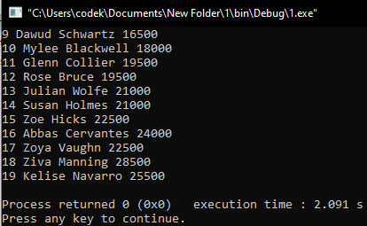 |
| Movie Structures | Print out movie data using structures | 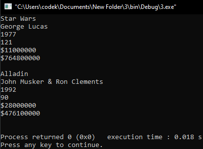 |
| Structure Search & Sort | Search and sort through an array of structures | 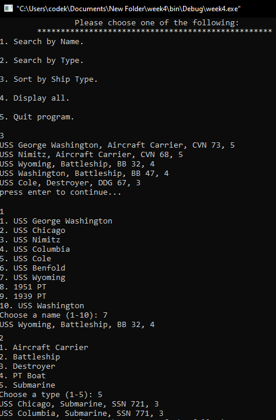 |
| Text Adventure | Text adventure using external library | 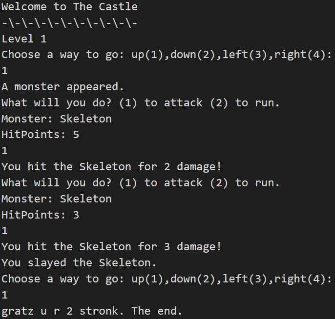 |
| Pointers | Uses pointers as parameters | 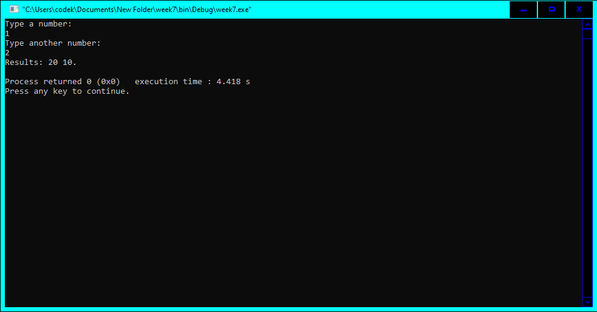 |
| Arrays and Pointers | Uses pointers as parameters for an array of test scores | 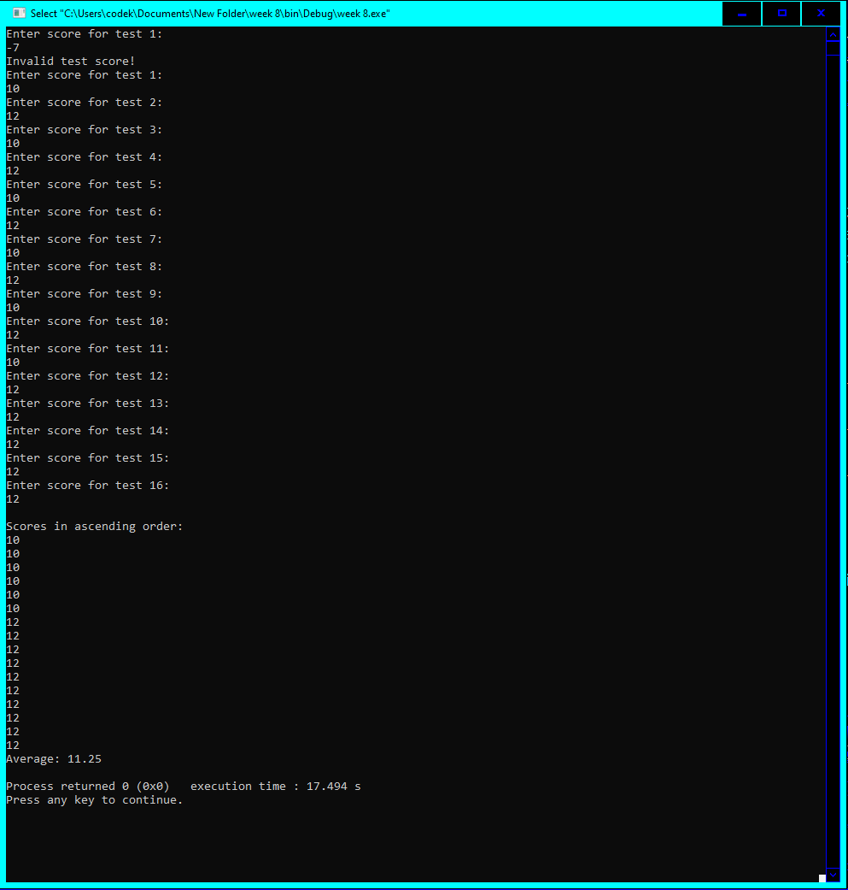 |
| Donations | Use user input, pointers, and arrays to sort donations + input validation | 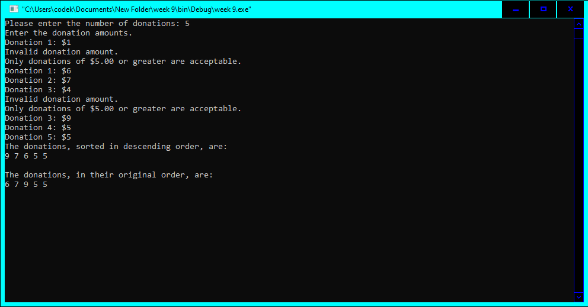 |
| Movie Statistics | Prints out statistics from user input about movies | 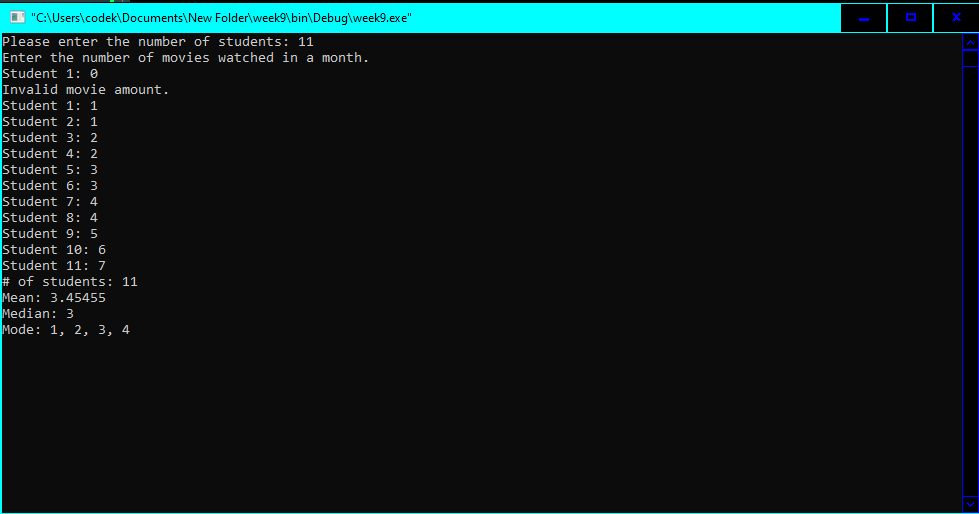 |
| Linked List Class | Linked list class with getters and setters | No Preview |
| Linked List Printout | Prints out a linked list using linked list class | 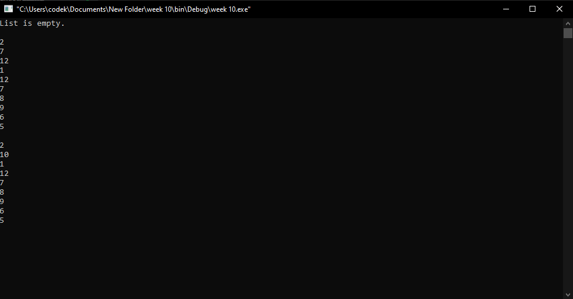 |
| Reverse Linked List | Added reverse method to linked list class | 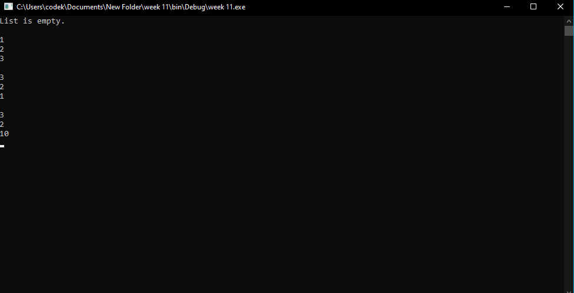 |
| Rainfall | Given rainfall each month put into a linked list and print out statistics and sort | 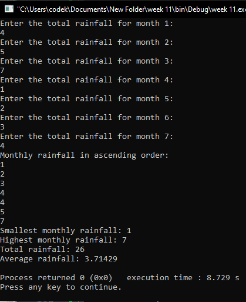 |
| Reverse Text | Uses a stack to reverse text in a file | 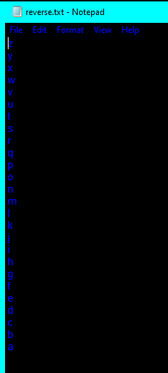 |
| Space Ace C++v1 | Space shooter created in C++ using Simple and Fast Multimedia Library (SFML) |